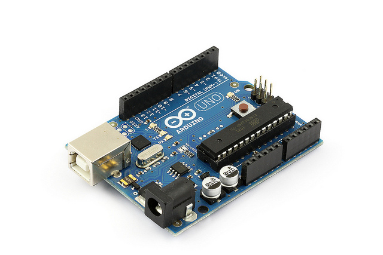

Bonescript
Simplified Physical Computing with Node.JS
Thursday, July 19, 2012
5:00PM, Open Hardware, D137

Jason Kridner
Software Architecture and Community Development Manager
Sitara ARM Processors
Texas Instruments
jkridner@beagleboard.org or jdk@ti.com
To-do items
- Add screen capture of Cloud9
- Add jQuery color toggle on attachInterrupt
- Add list of capes
BeagleBoard.org is open access to ARM processors
BeagleBoard.org is an open hardware project leveling access to low-power mobile processing
| BeagleBoard-xM: Open software desktop experience with extra MHz and extra memory |
BeagleBone: Hardware I/O focus with single cable development experience |

|

|
Arduino reignites electronics interest for non-experts
Not the original BeagleBoard inspiration, but should it have been?

- Removes cognitive barriers to demonstrating hardware interactions
- Avoids C++ boilerplate such as "int main(int argc, char* argv) ..."
- Eliminates manual linking to libraries
- Derived from Processing and then Wiring
- Minimal time to Hello-World-for-hardware: toggling of LED
- Lots of examples on interfacing
- Hundreds of "shields", breakout-boards and tools like Fritzing enable step-by-step examples
BeagleBone: open hardware expandable computer
Latest ARM open source focused on easy hardware experimentation
Bonescript enables physical computing exploration
Linux handles the interfaces, JavaScript provides the glue
- Builds on two key familiar programming environments: web and Arduino
- JavaScript is language of web and first logical choice for new programmers
- HTML5 and libraries provides rapid prototyping of GUIs and ability to access remotely
- Benefits from being run on complete Linux computer
- Networking and USB stacks
- Extensive libraries and processing performance, such as OpenCV
- Web-based zero-install experience
- Event-based model of NodeJS simplifies asynchronous interactions
- I/O interactions are relatively slow compared to the CPU
- Lends itself naturally to many event handlers
- Goal is a self-documenting interactive teaching web experience
- Currently using W3C Slidy for presentation view
First experience of Bonescript
Familiar Arduino function calls, exported to the browser
The links below are live and will impact the USR3 LED on your BeagleBone. The exact code used
in the browser is below and will send messages to your board using
Socket.IO.
Set pin high: run
pinMode(bone.USR3, 'out');
digitalWrite(bone.USR3, 1);
Set pin low: run
digitalWrite(bone.USR3, 0);
Native sketch-like applications
Bonescript application code uses the typical setup/loop global functions
Some boilerplate required, but fairly minimal. Below is blinking LED app
with the familiar blocking style:
require('bonescript');
ledPin = bone.USR3;
setup = function() {
pinMode(ledPin, OUTPUT);
};
loop = function() {
digitalWrite(ledPin, HIGH);
delay(1000);
digitalWrite(ledPin, LOW);
delay(1000);
};
Installation and execution of above 'blinkled.js' with node 0.6.x on a supported platform would
look something like:
# npm install bonescript
# node blinkled.js
Interactively add new loops
Bonescript adds addLoop function and multiple loops
- Arduino sketches are designed to block
- Web apps don't want to run all loops at beginning of time
- Each loop is a fork using NodeJS 'cluster' feature
- Not in the spirit of NodeJS, but goal is simplicity and growth
- Also added blocking 'delay' call for familiarity
- Works well for independent processes
- Vision is to enable moving loops to dedicated processors or RT threads
- Loops are local strings with one-time global reference
- Callbacks forwarded when loop returns a non-false value
- Performance is reasonable today for many interactive apps
addLoop/getLoops/removeLoop
Run something repeatedly
Blink USR3 LED: run
pinMode(bone.USR3, 'out');
addLoop(function() {
digitalWrite(bone.USR3, 1);
delay(100);
digitalWrite(bone.USR3, 0);
delay(100);
});
Halt all loops: run
getLoops(function(x) {
for(var loop in x.loops) {
removeLoop(loop);
}
});
setInterval/clearInterval
Run something repeatedly without invoking a process
- Starts faster than addLoop because it isn't invoking a process
- Consumes less CPU on target
- Puts load on browser machine and communications in this example
Blink USR3 LED: run
value = 0;
pinMode(bone.USR3, 'out');
interval = setInterval(function() {
value = value ? 0 : 1;
digitalWrite(bone.USR3, value);
}, 100);
Halt function: run
clearInterval(interval);
doEval
Run something remotely just once
What if we want to invoke the previous example on the target, rather than the browser?
Blink USR3 LED: run
doEval(function() {
value = 0;
pinMode(bone.USR3, 'out');
interval = setInterval(function() {
value = value ? 0 : 1;
digitalWrite(bone.USR3, value);
}, 100);
return(interval);
}, doAlert);
Halt function: run
doEval(function() { clearInterval(interval); };
attachInterrupt/detachInterrupt
Detect input changes
Please connect P8-3 to P8-5 with a 1khom resistor
Attach interrupt and toggle P8-3: run
pinMode(bone.P8_5, 'in');
pinMode(bone.P8_3, 'out');
value = 0;
digitalWrite(bone.P8_3, value);
attachInterrupt(bone.P8_5, function(x) {
digitalWrite(bone.USR3, x.value);
}, 'both', doAlert);
interval2 = setInterval(function() {
value = value ? 0 : 1;
digitalWrite(bone.P8_3, value);
}, 1000);
Halt function: run
clearInterval(interval2);
detachInterrupt(bone.P8_5, doAlert);
BeagleBone hardware details

- Processor
- 720MHz super-scalar ARM Cortex-A8
- armv7 and NEON SIMD instructions
- 3D graphics accelerator
- Connectivity
- USB client: power, debug and device
- USB host, Ethernet
- 2x46 pin headers
- 7xADC, 66xGPIO
- 2xI2C, 5xUART, SPI, CAN, 8xPWM
- LCD, parallel, MMC/SDIO
- Software
- 4GB microSD card with Angstrom Distribution
Bonescript enables low-level physical access to GPIOs via digitalInput/digtalOutput
analogRead/analogWrite
Use ADCs and PWMs to read/write analog values
Monitor analog in:
run
pinMode(bone.P8_13, 'out', 4);
addLoop(function() {
var value = analogRead(bone.P9_36);
analogWrite(bone.P8_13, value);
}, 25, doAlert);
Fade in and out:
run
pinMode(bone.P8_13, 'out', 4);
addLoop(function() {
if(!this.awDirection) { this.awValue = 0.01; this.awDirection = 1; }
analogWrite(bone.P8_13, this.awValue);
this.awValue = this.awValue + (this.awDirection*0.01);
if(this.awValue > 1.0) { this.awValue = 1.0; this.awDirection = -1; }
else if(this.awValue < 0.01) { this.awValue = 0.01; this.awDirection = 1; }
}, 100, doAlert);
Halt all loops:
run
getLoops(function(loops){for(var loop in loops.loops){removeLoop(loop, doAlert);}});
Using a slider with analogWrite
Please connect P8-13 to LED through 1khom resistor
Attach to slider:
run
pinMode(bone.P8_13, 'out', 4);
$("#slider1").bind("slidechange", function(event, ui) {
analogWrite(bone.P8_13, ui.value/100.0);
})
Using a slider with analogRead
Please connect P9-36 to potentiometer and adust from 0V to 1.8V
Attach to slider:
run
arUpdateSlider = function(x) {
if(x.callback) $("#slider2").slider("option", "value", x.callback*100);
};
addLoop(function() {
return(analogRead(bone.P9_36));
}, 100, arUpdateSlider);
Halt all loops:
run
getLoops(function(loops){for(var loop in loops.loops){removeLoop(loop, doAlert);}});
Capes extend BeagleBone capability
Cloud9 experience
The event-driven model of Node.JS’s JavaScript implementation provides an optimized approach to handling embedded I/O
JavaScript is the programming language of the web and a logical first choice for new programmers
By providing the development environment over the web using Cloud9 IDE
familiarity is maintained from top to bottom building on the same technology and language
Additionally, lengthy download and installation of tools is not required
nor any permission to alter a computer host that is often used for more passive experiences such as browsing the Internet
Avoiding any surprises is a critical aspect of building a platform for inexperienced users
the universality of JavaScript provides new opportunities to avoid such surprises or delays to success
When a sensor provides data, JavaScript closure functions provide an easy-to-use mechanism to efficiently
responsively update a web-based user interface providing visualizations of the data
Services running on the BeagleBone
Default web services ready for you to try

The interactivity presented on the previous slide is provided through a set of services
running on your BeagleBone. You can experiment with some of these services below. The
immediately following slides will provide you with some dynamic information about your
BeagleBone.
-
Cloud9 IDE
- Write applications directly in the browser
-
Gate One
- Execute ssh (terminal) directly in the browser
- JavaScript terminal (bone101)
- Interactively execute JavaScript in the browser
- Shell (bone101)
- Issue commands to bash using JQuery Terminal
Attached capes
Any attached capes with ID EEPROMs would be listed here
Blinking an LED (external)
The "hello world" of hardware
- Connect resistor lead to P8_1 (GND)
- Connect other lead to short LED lead
- Connect long LED lead to P8_3
- Launch the
Cloud9 IDE
- Run the 'blinkled.js' application